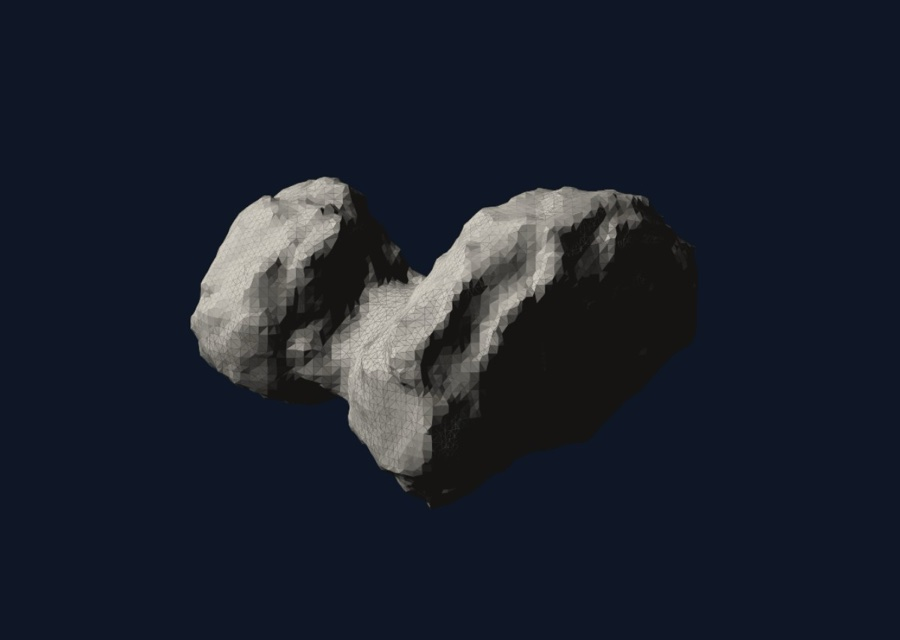

I'm learning to write flight dynamics and GNC software, and spend most of my free time leading student space teams.
A little more about me
I was born in Mexico City, with two biochemists as parents. We moved to Switzerland when I was four and I grew up in a small village (around 1,000 inhabitants!) north of Lausanne. At thirteen we left for Singapore, where I widened my horizons and my ambitions as part of the international community there, before returning to Switzerland to finish high school.
As for why I want to be part of the space industry: when I was very young I watched Star Wars with my brother and, rather naively, thought "I can build that" when I got my eyes on an X-wing. Many years later, this would lead me to choose Southampton for my undergrad.
Flight dynamics became my calling because I have come to know that no spacecraft flies anywhere without it: orbital mechanics is the winds and currents of space exploration.
DegreeBEng Aeronautics & Astronautics (Spacecraft Engineering), University of SouthamptonDatesSep 2024 – Jun 2027Grade1st class throughoutLanguagesEN, ES, FR
These are the three projects that are closest to my heart at the moment: they show what I am spending the most time on, what I built while in industry, and the team I am proud to have founded.
Main project: BEng thesis, 2026–27
Onboard learning of small-body dynamics from an imperfect initial model
I am simulating a machine learning program onboard Rosetta that has been handed the same wrong initial guess of comet 67P's gravity.

Comet 67P, rendered from the shape model in Izzo & Gómez (2022)
Astrodynamicists have many mature dynamical models for the major bodies of the solar system: we can precisely predict how a spacecraft will move around the Sun, the planets, and our Moon, thanks to the fact that their gravity has been measured over decades. Comets and asteroids are a completely different matter: each one has its own shape and density distribution, hence its own gravity, and its own spin. Before arrival, comet 67P was thought to be a smooth "rugby ball" shape; the images obtained on approach instead revealed a shape closer to a dumbbell. In this project, I am simulating a machine learning program onboard Rosetta that has been handed the same wrong initial guess. As the spacecraft flies the same orbits it flew on its mission, the program compares where it expected the spacecraft to be with where it really is, using that difference to correct its prediction of the comet's gravity.
SupervisorProf. Alexander WittigStatusIn progress
Aim
To determine whether a neural Hamiltonian learned gravity model, initialised with the pre-arrival data of comet 67P and trained only on data collected along Rosetta's flown trajectory, can correct that wrong model, and how its accuracy, and the tracking time needed to reach it, compare with those of a spherical-harmonic model estimated from the same data.
Approach
This is a simulation study, using a simulated comet based on the uniform-density mascon model of 67P released with the geodesyNets code (Izzo and Gómez, 2022). A simulated spacecraft will replay the sequence of orbits Rosetta flew between arrival and lander delivery. The learned model will start from the pre-arrival data, propagate the spacecraft's state forward by a fixed timestep, compare its prediction with the observed state, and update the model to reduce the error.
Why a neural Hamiltonian
It is estimated directly from tracking arcs, accepts an initial set of data, remains valid close to the nucleus, and is small (353–721 parameters).
Baseline
The conventional spherical-harmonic estimator will be run as a batch least-squares fit receiving the same initial model, and the same observed states at the same update interval. To keep the comparison fair, it is fitted to the same arcs, through the same integrator and sensitivities.
What's new
This project builds directly on Acciarini and Izzo (2026), and differs in three ways: the initial model is wrong (the pre-arrival data, and an inaccurate mass), the trajectory follows Rosetta's own, and the comparison focuses on how long each representation takes to recover from the wrong prior.
Success
I will consider the project a success if the program can correct the wrong guess at all; it succeeds further if it does so faster than the conventional method.
Stage 2
A reinforcement-learning agent chooses the trajectory to gather information faster. This will only be attempted if Stage 1 is complete on schedule.
Internship: Magdrive, Harwell, Jul – Aug 2026
MMAT: the Magdrive Mission Analysis Tool
At Magdrive, I built a tool to answer any customer manoeuvre question in house, and carried out a verification campaign.
At Magdrive, I built a tool to answer any customer manoeuvre question in house, and carried out a verification campaign. I built this during my UKSA Skills for Space internship at the company. Wonderful company to work for, cannot recommend it enough.
Founder & lead: Southampton University Spaceflight Society, Jan 2025 – present
Starworks: a student rocket that lands itself
SUSF's vertical take-off, vertical-landing project, built around our 2.5 kN Banshee engine. I founded it and lead it.
Starworks is SUSF's vertical take-off, vertical-landing project, built around our Banshee engine (2.5 kN design thrust). I lead it technically and run the team.
Origin
I came across the Gruyère Space Program's lander, and shot an email to their lead for some advice on starting a lander project. Surprisingly, they answered immediately and Starworks as an idea was born the next day. I formally founded Starworks in January 2025 and assembled my dream team to lead it.
Milestones
May 2025Core team formed
Sep 202530 members
Dec 2025Engine preliminary design review, which I organised and mostly wrote
Jan 2026$3,000 Definity Project grant, from an application I wrote
2026–27~50 members, restructured into three working groups focused on the engine and testing
Connected work
Banshee's spiritual predecessor is Sverd, the 3D-printed regeneratively cooled engine I helped build and test. The core team from Scorpio 3 now leads Starworks propulsion. My VTVL descent simulator is now a full Starworks team tool, maintained by our Flight Dynamics team.
My short stint as a propulsion engineer, finding my passion in mission design, and my early experiments with the dark magic of GNC and orbit determination. Click any row for extra details.
WhenProjectStatus
Oct 2024 – Jun 2025
Scorpio 3 pintle injector
I led the sub-team that designed and partly machined the injector for SU Liquid Rocket Engine's 2.5 kN engine. It hot-fired successfully and now powers SUSF's first liquid launch attempt.
Done
My role
Led a sub-team of four engineers in the SU Liquid Rocket Engine team.
Design
A 2.5 kN IPA/N₂O pintle injector for a pressure-fed bipropellant engine. CAD in SolidWorks, hand calculations in Excel, and part of it machined by us on a manual mill and lathe.
Result
Hot-fired successfully in March 2026 at Newton Launch Systems. It now powers SUSF's first liquid launch attempt, planned for Q1 2027.
Injector FEA: von Mises stress in the top-mid and mid-bottom platesComet-1 hot fire with the Scorpio 3 engine. Apologies for the low quality: I'm trying to track down the higher quality video. You can see it here.
Skills
SolidWorks
Excel
Manual machining
Spring 2025
Sverd liquid rocket engine
I manufactured key parts of Sverd, a 3D-printed regeneratively cooled engine, and was on the team that hot-fired it at Race 2 Space 2025.
Done
Context
SULRE (SU Liquid Rocket Engine), the team behind the Comet-1 rocket, split in two: one group building Comet-1, the other taking the Sverd engine to Race 2 Space. I was technically on the Comet-1 team, working on the Scorpio 3 engine, but was asked to help with Sverd.
My role
Manufactured the igniter cartridge and the pressure sensor cartridge, in semester 2 of 2024–25, and was part of the testing team at Race 2 Space 2025.
Legacy
As a 3D-printed, regeneratively cooled engine, Sverd is the spiritual predecessor of Starworks' Banshee engine.
I led a team of five designing a lunar imaging startup: a 34-CubeSat constellation for near-real time images of most of the lunar surface. We reached the finals and were invited to present at Airbus Stevenage.
Done
My role
As team lead I coordinated the business case and technical work, I also carried out the market sizing myself and set mission requirements in line with our business goals.
Concept
30 imaging and 4 relay 2U CubeSats in lunar orbit. The imaging layer flies at 350 km and the support layer at 100 km, at the 93° inclination selected from our GMAT trade study, with planes evenly spaced in RAAN to avoid coverage clustering, for 99% lunar coverage. The business case sized a £1.17B annual addressable market in 2045, with £69.5M of non-recurring cost covered by a £77M three-phase funding plan.
Feedback
Before the final, reviewers pointed out that our Walker design based on preliminary hand calcs ignored lunar rotation, so we replaced it with a full constellation design in GMAT using its lunar gravity model and rotation. At the final, the judges found the realistic customer base too small: our estimate of lunar settlement was too large to justify near live imaging of such a large portion of the lunar surface.
Lesson
Business concepts should start with what the market needs, from a customer base rather than a cool concept. I would later learn in the UKSEDS Space Entrepreneurship programme that this is called a demand pull instead of a technology push.
The February reports describe the design before the final (24 satellites at 250 km); the finals deck shows the redesign above.
Skills
NASA GMAT
Excel
LaTeX
Summer 2026
VTVL descent simulator
A simulated vertical take off and vertical landing rocket, the aim was to compare multiple controller types.
Done
Why I did it
The team I lead, Starworks, is designing a lander. I wanted to understand the control problem myself before handing it to our brand new flight dynamics team, while also giving them a solid functional tool to start off with.
Method
Planar 3-DOF nonlinear dynamics with real mass depletion, and separate touchdown and flameout events. A cascaded PD controller with dynamic inversion, taken through to a gain-scheduled LQR tuned with Bryson's rule. Scenarios are JSON files validated by Pydantic, with 14 regression tests.
Once mass depletion was put in place, LQR turned out to burn more propellant and flame out early around 2.9 m altitude, whereas the cascade landed with 2.1 kg of fuel to spare. This taught me about cost functions, since the LQR controller I designed had no fuel term, this behaviour was explainable.
What's next
Active development is now in the hands of the Starworks flight dynamics team, where this sim has become a core tool.
Personal
Relative navigation for a chaser spacecraft in LEO
A spacecraft trying to meet another in orbit has to work out where its target is from noisy distance and angle measurements. This project builds the filter that does it.
In progress
Why I did it
Navigation was the missing piece in my GNC work: I had guidance and control projects but no estimation. This is the estimation half of a rendezvous loop.
Method
Clohessy–Wiltshire dynamics, whose closed-form state-transition matrix makes propagation exact, so all the nonlinearity sits in the range and bearing measurements. An extended Kalman filter written from scratch, compared against dead reckoning and a least-squares fix. Tuned to statistical consistency (NEES and NIS inside chi-square bounds), then used to show that bearing-only tracking can't pin down range until the chaser manoeuvres.
Frame and sign conventions are where these projects go wrong, so I validated them on the bounded relative-motion ellipse before writing any filter. An error plot can't tell you whether a filter is well tuned; consistency tests can.
What's next
Feeding the estimate into a rendezvous controller, to close the full guidance, navigation and control loop.
Spring 2026
Quadcopter gimbal control (SESA2030)
In a team quadcopter build, I owned the camera gimbal's control system. The quadcopter flew; the gimbal demo taught me about quality assurance.
Done
My role
Owned the PID gimbal control system and was responsible for final assembly, in semester 2 of 2025–26.
Result
The quadcopter flew. The gimbal demo failed, because of one negative sign in the code and one unplugged cable.
Lesson
Final assembly taught me a lot about integration, and how important it is to plan for integration and assembly early on. Final assembly and code upload also need their own quality checks.
Pre-flight checksThe final flight, in the netted test area
Skills
PID control
Embedded
Dec 2025
ELSET Reader
Made a batch reader for 10,000+ satellite orbit records from Space-Track. This was my first dive into orbit determination, a quick christmas coding project.
Done
What it does
Batch-processes ELSETs to plot a given object's orbital elements over time. I focused on unknown objects but also looked at Starlink and GEO sats.
What it led to
Asking myself whether manoeuvres can be detected from TLEs, and what methods exist to characterise whether an unknown object is an active spacecraft or not. This led to my unknown space object characteriser idea, yet to be built.
Object 87042: normalised mean altitude and decay rate
Apologies for the poor quality, lost the original pictures due to an oversight of mine (did not commit the code and plots to GitHub and had a liquid-based incident with my laptop right after).
Early-stage regenerative cooling design for a >30 kN methalox engine at a startup, alongside founding Starworks.
Done
What I did
Early-stage design of the regenerative cooling jacket for a >30 kN methalox engine, using analytical thermal models in Python and RPA. Also wrote CONOPS and PFMEA documentation. From April 2025 I was team lead.
Notes
Figures are under NDA, and the company is now defunct. It started the same month I founded Starworks, so I worked on both in parallel.
Skills
Python
RPA
Thermal analysis
Upcoming projects
Planned
Unknown space object characteriser
The plan: estimate the area-to-mass ratio and origin of poorly characterised space objects from public tracking data, then test the estimates blind against objects whose properties are known. It will run on my own C++ propagator and a batch least-squares estimator. The first part, the propagator itself, is in progress.
The teams I run and the structures I've set up to help them work.
WhenRoleStatus
May 2026 –
Head of Projects, SUSF
Society membership grew from ~150 to 260+ largely thanks to our large project selection, this year our teams entered a record five national competitions and are attempting new exciting milestones.
In progress
Portfolio
Eight teams, including two new teams I brought on board, and an annual budget of £12k+.
What I set up
A tiered funding model (flagship, experimental, competition), adopted by the society. A shared compendium, SharePoint and GitHub organisation used by all teams. A Team Lead Code of Conduct, adopted society-wide.
Met Fabrizio Pisani and Pedro Rodríguez López, founders of Meta Future and Southampton graduates, and had great conversations about how to run Starworks.
Jun 2025
Northrop Grumman challenge
Presented to a panel of Northrop Grumman employee judges.
Summer 2025
Race 2 Space 2025
On the testing team that hot-fired the Sverd liquid rocket engine, for which I manufactured the igniter and pressure sensor cartridges. See the project →
Summer 2025
Two certificates
Space mission design with EPFLx, and space hardware testing with Plastron UK. Both are displayed on my LinkedIn.
European Space Generation Workshop, Royal Institution, London
Selected delegate. Took part in a SatComs roundtable on IRIS² with students, young professionals and MDA Space industry mentors, and met Andrew Bacon (Space Forge) and ESA astronaut Meganne Christian.
E-SGW 2026, London
Sep 2026
Deputy Team Lead, Project Stardust
Joined the leadership of SUSF's CubeSat team. See the role →
15–17 Sep 2026
MMAT poster at UKEO 2026
My Magdrive work was presented as a poster at UKEO 2026, University of Warwick.
17–18 Oct 2026
UKSEDS Space Entrepreneurship Programme, Edinburgh
Selected for the programme. In randomly assigned teams, ours won the pitching competition with a space debris characterisation business. Talks included Katherine Courtney, former CEO of the UK Space Agency; the judges were Matjaz Vidmar, Ria Urban and Aiperi Dalbaeva. To confirm: judges' names against the programme
Upcoming5 entries
Feb 2027
Airbus Space Design Competition finals, again
Hoping to reach the finals again, building on what RION taught us.
Q1 2027
Banshee hot fire
The first hot fire of Starworks' Banshee engine, hopefully on our own test stand.